Envanterden ortak kullanıma,
adım adım.
Tersanenizin envanterini ortak ekipman türleri altında düzenleyin. Diğer tersanelere açmak istediğiniz kayıtları seçin. Bedelsiz kullanım için talep gönderin; ekipmanın sahibi tersane onaylasın, teslim ve iade kaydedilsin.
- Model ve adet
- Forklift gibi tek tek izlenen ekipmanlar marka/modelle gösterilir. 50 adet, 50 ayrı kayıttır.
- Tek tek ekipmanlar
- Listeyi açın. Her ekipmanın kendi kodunu, bilgilerini ve paylaşım durumunu görün.
- Adetli malzeme stoku
- İskele parçaları ad, kod ve stok adediyle gösterilir. Binlerce parça tek kayıtta tutulabilir.
Rehber uygulamada girişten sonra açılır. Görseller kurmaca demo verileridir; alanlar seçtiğiniz türe göre değişebilir. Güncel işlemleri aşağıdaki düğme adlarıyla izleyin.
Klavyeyle kullanım: İlk Tab ile İçeriğe geç bağlantısına ulaşın. Açık menüde Escape menüyü kapatıp odağı açan düğmeye döndürür. Ekipman türü aramasında yukarı/aşağı oklar ile ilerleyin, Enter ile seçin; seçim varsa Escape arama listesini kapatır. Kullanım taleplerindeki yön sekmelerinde oklar, Home ve End kullanın. Pencereden ayrılırken kaydedilmemiş taslak varsa Escape onay sorar; değişiklikleri kendiliğinden silmez.
Eşleşen bölüm bulunamadı
“Excel”, “Forklift” veya “Paylaşımı yönet” gibi bir işlem ya da düğme adı deneyin.
Önce modeli ve adedi, sonra ekipmanları görün
Envanterim, aynı marka ve modeldeki ekipmanları birlikte gösterir. Örneğin aynı modelden 50 forkliftiniz varsa 50 adet görürsünüz; Listeyi aç ile bu 50 kaydı tek tek inceleyebilirsiniz.
Kim kullanır? Tersane yöneticisi ve personel.
Başlangıç: Envanterim
- Envanterim ekranını açın.
Marka, model ve toplam adedi görün. Modeli eksik kayıtlar Model belirtilmemiş grubundadır.
- İlgili modelde Listeyi aç seçin.
Açılan listede her satır bir ekipmandır. Belirli bir kayıt için arama alanına marka, model veya ekipman kodu yazın. Uzun listelerde alttaki sayfa numaraları veya Önceki / Sonraki düğmeleriyle ilerleyin. Sayfa başına gösterilen satır sayısını değiştirir; modelin toplam adedi aynı kalır.
- Ekipmanı açarak bilgilerini inceleyin.
Ayrıntıdan Düzenle veya yetkiniz varsa Paylaşımı yönet seçin. Aynı işlemlere satırın İşlemler menüsünden de ulaşabilirsiniz. “Yalnız envanterimde / Ortak listede” bilgisi paylaşım durumudur.
- Özete dön ile başka bir modele geçin.
Bütün kayıtları birlikte incelemek için Tek tek ekipmanlar seçin.

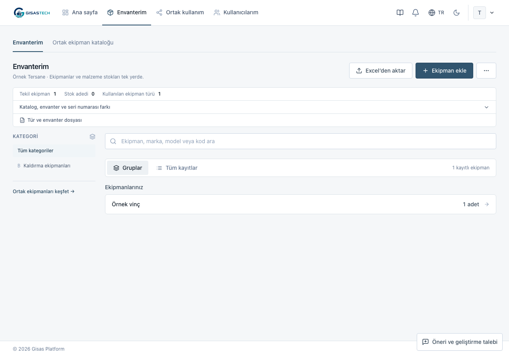

Platform hesabında bu ekran Birleşik envanter adını taşır. Tersanelerin kayıtları aynı marka ve modelle gruplanır; her ekipmanın sahibi tersane korunur. Tersane filtresiyle bir kurumu seçebilirsiniz.
Güncelleme gerekli görüyorsanız Eksik bilgili kayıtları göster seçin. Kaydı açıp işaretlenen bilgileri tamamlayın. Bilinmeyen stok adedi sıfır kabul edilmez.
Ekipmanı veya malzeme stokunu kaydedin
Tek tek izlenen her fiziksel ekipman ayrı kaydedilir. Başlangıç adedi 1’dir. Adetli malzemede bir satıra toplam stok adedini yazın; parça sayısı kadar kayıt açmayın. Tek işlemde en fazla 50 kalem ve 500 ayrı ekipman kaydı eklenebilir.
Kim kullanır? Aktif tersanenin yöneticisi ve personeli.
Başlangıç: Envanterim → Ekipman ekle
- Ekipman ekle düğmesini seçin.
Forklift grubunun içinden açarsanız tür önceden seçili gelir.
- Ekipman türünü seçin.
“Forklift” ortak tanımdır. Tersane hesabında kayıt kendi kurumunuza eklenir; platform hesabında sahibi aktif tersaneyi de seçin.
- Bir ekipman için Adet değerini 1 bırakın.
Aynı özellikteki ekipmanlar için adedi artırın; her adet ayrı ekipman kaydı oluşturur. Adetli malzemede girilen miktar tek stok kaydında tutulur.
- Kataloğun istediği bilgiler alanlarını doldurun.
Diğer ayrıntılar için İsteğe bağlı özellikler bölümünü açın. Ayrı seri numaraları gerekiyorsa her ekipmana ait değeri ayrı satıra yazın. Üreticinin verdiği gerçek seri numarası otomatik üretilmez.
- Gerekirse Başka ekipman ekle seçin; özeti kontrol edip Envantere ekle kullanın.
Tekil ekipman sayısı ile stok kaydı ve parça adedi ayrı gösterilir. Bütün kalemler birlikte kaydedilir. Kurum içi envanter kodları otomatik atanır; kaydı Düzenle ile açıp değiştirebilirsiniz. Sonraki değişikliklerde Kaydet kullanın.

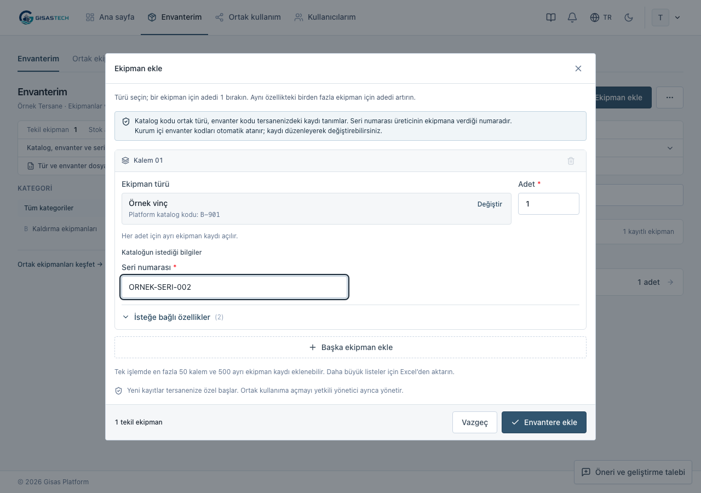
Aradığınız tür listede yoksa platform yöneticisinden ortak tanımı eklemesini isteyin. Tek bir ekipmanın kodunu tür adına yazmayın.
Tek Excel ile türleri ve envanteri hazırlayın
Farklı ekipman türlerini ve seçilen tersanenin kayıtlarını aynı dosyada aktarın. Ortak türün katalog kodu sayfaları birbirine bağlar; yerel envanter kodu tersanenizin kaydını tanıtır.
Kim kullanır? Platform yöneticisi türleri ve alanları düzenler. Tersane yöneticisi mevcut türlerle kendi envanterini aktarır.
Başlangıç: Envanterim → Excel’den aktar. Platform yöneticisi Ekipman türleri → Katalogdan aktar yolunu da kullanabilir.
İlk kurulumda katalog veya tersane yoksa Birleşik envanter → Excel’den aktar doğrudan birleşik pencereyi açar. Bu pencerede Boş Excel şablonu indir kullanın.
- Şablon gerekiyor mu? → Birleşik şablonu indir seçin.
Başlıkları koruyun; gerçek veriler ikinci satırdan başlar. Dosyadaki Rehber sayfası sütunları açıklar.
- Gereken veri sayfalarını doldurun.
Ekipman türleri ortak tanımları, Alanlar bu türlerin bilgilerini, Envanter seçilen tersanenin ekipman veya stok kayıtlarını tutar. Her sayfada aynı tür için aynı katalog kodunu kullanın. Yalnız tür veya yalnız envanter içeren dosya da aktarılabilir.
- Envanter bilgilerini ve kalıcı kodları kontrol edin.
Türün alan adı veya alan koduyla ek sütun açın. Yeni alanın Zorunlu hücresi boşsa alan isteğe bağlıdır. Her envanter satırında yerel envanter kodu veya türün seçilmiş eşleştirme alanı bulunmalıdır.
- Dosyayı seçip önizleyin; önerilen aktarım yolunu kontrol edin.
Birleşik yapı algılandığında Bu dosyayı birleşik olarak incele seçin. Dosya taşınır; yeniden seçmeniz gerekmez. Platform hesabında envanter varsa Envanterin ekleneceği tersane seçin. Yalnız tür hazırlıyorsanız Yalnızca ekipman türleri kullanın. Tersane yöneticisi kendi kurumuna aktarır. Excel'deki tersane adı sahiplik atamaz.
- Dosyayı incele ile önerileri kontrol edin.
Yeni ve güncellenen kayıtları, eski ve yeni değerleri, atlanan satırları ve seçim bekleyen satırları okuyun. Hata varsa dosyayı düzeltin. Belirsiz sınıfı seçin; tercih değişince dosyayı yeniden inceleyin.
- Kontrol edilen kayıtları aktar seçin.
Dosya birlikte uygulanır: düzeltme gereken satır varsa hiçbir kayıt değişmez. Önizlemeden sonra ilgili bilgi değişirse yeniden incelemeniz istenir. Sonuç sayılarını ve envanterden birkaç kaydı kontrol edin.
Elimde farklı düzenli, tek tür envanter dosyası var
Envanterim → Excel’den aktar seçin. Aktif tersane personeli de bu yolu kullanabilir. Önizle ve Devam Et ile sayfa, başlık, tür ve sütun önerilerini görün; belirsiz seçimleri Dosya düzeni içinde tamamlayın.
Tek tür şablonu için aynı pencerede Şablon gerekiyor mu? bölümünü açın, ekipman türünü seçip Tek tür şablonunu indir kullanın; gerçek veriler dördüncü satırdan başlar. İlk üç satırı ve gizli _mapping sayfasını koruyun. Ayar değişince Dosyayı yeniden kontrol et, ardından hazır kaydı aktar seçin.
Bu yol satır bazında kaydeder. Hata varken geçerli satırlar kaydedilmiş olabilir. Oluşturuldu, Güncellendi, Atlandı, Hata sayılarını okumadan aynı dosyayı tekrar göndermeyin. Üç sayfalı dosyada ise bütün aktarım birlikte uygulanır.

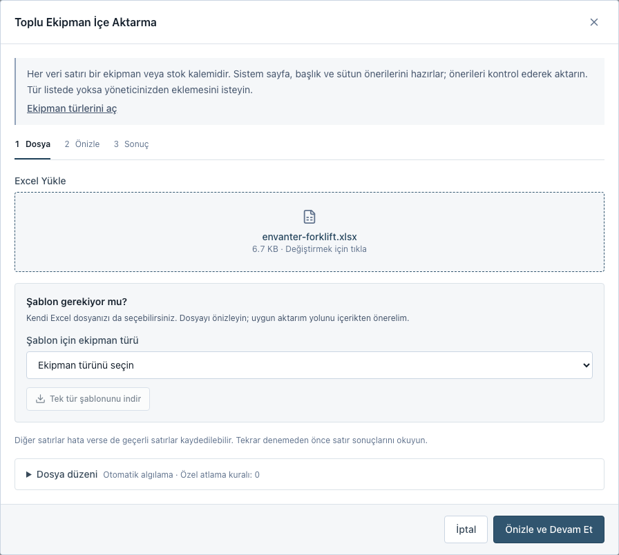

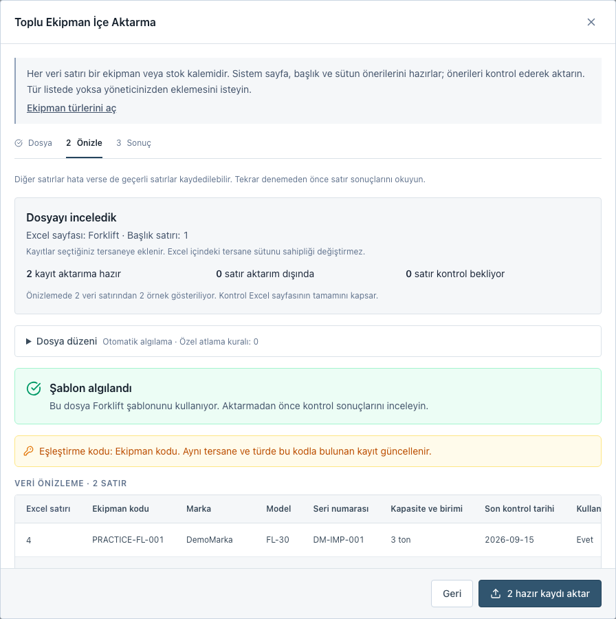
Toplam, ara toplam ve tekrar eden başlıklar güvenle ayırt edildiğinde atlanır; Excel satır numarası ve nedeni gösterilir. Sıfır stok ve adında “toplam” geçen gerçek malzemeler korunur. Formül, yinelenen kod veya belirsiz değer için ekranın istediği düzeltmeyi yapın.
Diğer tersanelere yalnız seçtiğinizi gösterin
Envanter kaydı kurumunuzda kalır. Paylaşıma açtığınız ekipman, sınırlı bilgilerle diğer tersanelerin ortak listesinde görünür.
Kim kullanır? Tersane yöneticisi veya yetkili genel yönetim hesabı. Personel yayın ayarını değiştiremez.
Başlangıç: Envanterim → Listeyi aç → İşlemler → Paylaşımı yönet
- İlgili modelde Listeyi aç seçin.
Ekipmanı kodundan bulun. O satırdaki İşlemler menüsünden Paylaşımı yönet seçin.
- Bu ekipmanı diğer tersanelerin ortak listesinde göster seçeneğini işaretleyin.
- Başlığı, kapasiteyi ve paylaşım adedini yazın.
Kurmaca örnek: envanterde 500 platform parçası bulunabilir; yalnız 100 adedini paylaşabilirsiniz. Tek tek izlenen bir ekipman kaydı için adet 1 olur. Adet boşsa sahibiyle görüşülür; uygulama üzerinden kullanım talebi için adet gerekir. Toplam stok, iç kod ve teknik bilgiler otomatik yayımlanmaz.
- Uygunluğu, kullanım ve teslim koşullarını açıklayın.
Tarih, operatör, taşıma, teslim ve iade gibi anlaşılması gereken bilgileri not edin. İsteğe bağlı iletişim bölümüne yalnız diğer tersanelere göstermek istediğiniz kişi, e-posta ve telefonu yazın. Kayıtlı hesap veya tersane iletişimi otomatik kopyalanmaz.
- Karşı tersanenin göreceği önizlemeyi kontrol edip Kaydet seçin.
Ortak ekipmanlar → Detayları gör ekranında başlık, teklif edilen adet, kapasite, uygunluk, koşullar ve açık iletişim görünür. İç kod, özel teknik alanlar, toplam stok ve atanan kişi gösterilmez.
- Yayını geri çekmek için aynı ekipmanda İşlemler → Paylaşımı yönet açın.
Görünürlük işaretini kaldırıp Ortak listeden kaldır seçin. Ekipman ortak listeden kalkar, kendi envanterinizde kalır. Paylaşım bilgileri taslak olarak korunur; önceki onay ve teslim geçmişi silinmez. Yeni talepler durur.

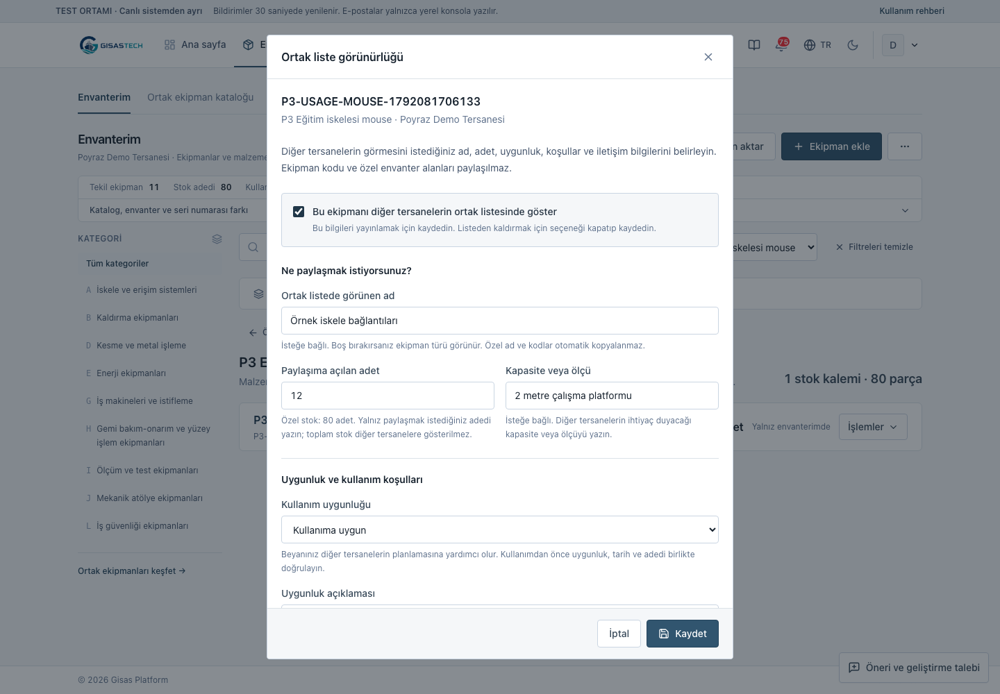


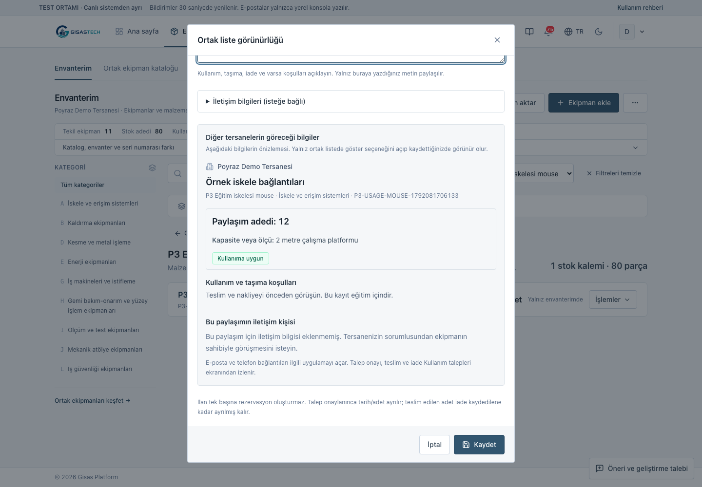
Paylaşım düğmesi görünmüyorsa hesap yetkinizi kontrol edin. Tür kapsam dışındaysa yayın açılamaz; ayrıntı paylaşım koşullarında.
Yalnız ihtiyaç duyduğunuz bilgileri isteyin
Ekipman türü bütün tersanelerin kullanabildiği ortak tanımdır. Buraya “Forklift” eklemek, bir tersaneye fiziksel forklift eklemez. Katalog kodu bu tanımı; envanter kodu tersanenizin kaydını tanıtır.
Kim kullanır? Platform yöneticisi.
Başlangıç: Ekipman türleri → Tür ekle
- Önce türü adı veya katalog koduyla arayın.
Mevcut ortak tanımı tekrar oluşturmayın. Uygun tanım yoksa Tür ekle açıp ad, kategori ve ön paylaşım sınıfını seçin. Yeni türde katalog kodu boşsa uygulama kod oluşturur; sonraki aktarımlarda bu kodu koruyun.
- Takip biçimini seçin.
Tek tek ekipman, her fiziksel ekipmanı ayrı izler. Adetli malzeme stoku, bir malzemenin parça miktarını tek kayıtta tutar. Envanteri olan türün takip biçimi değiştirilemez.
- Yalnız gereken bilgi alanlarını ekleyin.
Alan ekle ile metin, sayı, tarih veya seçim gibi alanı tanımlayın. Yeni alanlar, stok için önerilen alanlar dahil, isteğe bağlı başlar. Gereksiz alanları kaldırabilirsiniz.
- Alanın görevini seçin.
Bu bilgi ne için kullanılacak? altında Kayıtları eşleştiren kod, Listede görünen ad, Toplam stok adedi veya Ek bilgi seçin. Stok adedi sayı alanıdır. Görev seçmek alanı zorunlu yapmaz.
- Mevcut türde zorunlu bilgi değiştiriyorsanız etkisini inceleyin.
Kaydetmeden önce kontrol bölümünde eksik kalacak kayıt ve tersane sayılarını görün. Değişiklikleri uygula ile tamamlayın. Alanın görünen adını düzenlemek kalıcı alan kodunu ve eski değerleri korur.
Eksikler tamamlanmadan yeni paylaşım, kullanım onayı ve teslim yapılamaz. Sürmekte olan kullanımın iadesi kaydedilebilir. Aynı Excel ile tür ve gerçek envanter hazırlamak için Excel'den aktar bölümünü izleyin.

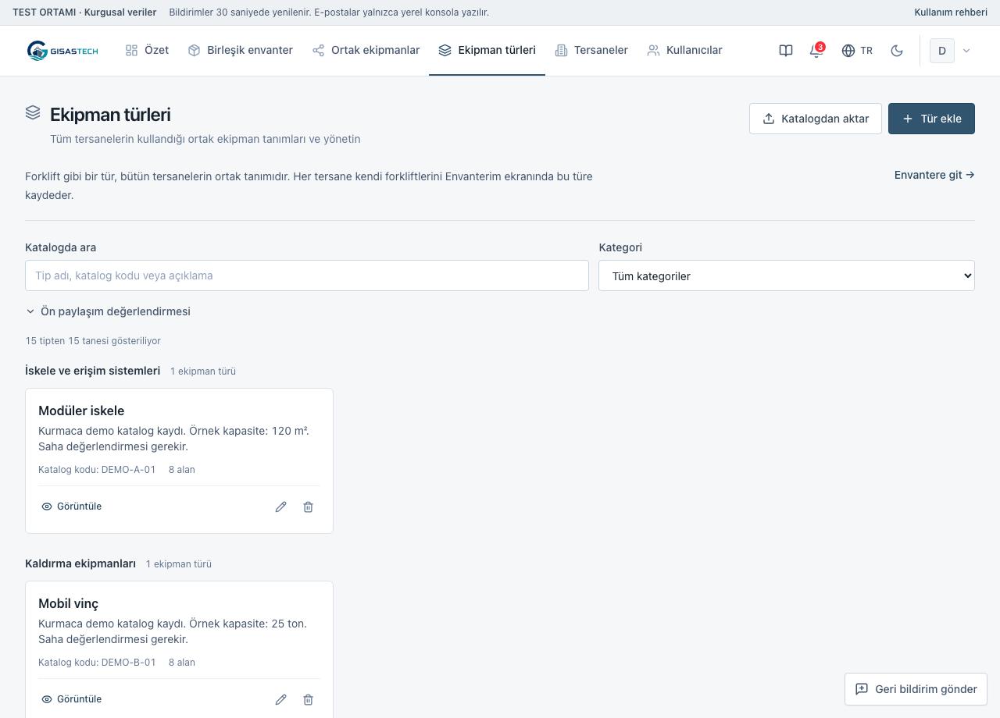
GISBIR taksonomisindeki türler ve kodlar ne anlama gelir?
Sağlanan taksonomi 13 kategori ve 175 ortak tür içerir; gerçek tersane envanteri veya stok adedi içermez. 1-TAKSONOMI ana sayfası kullanılır; aynı türleri tekrarlayan kategori sayfaları yeniden aktarılmaz.
A–M harfleri kategori kodudur; ortak türün katalog kodu değildir. Kapasite ve ölçü birimleri stok adedi sayılmaz. Önizlemede 40. ve 57. satırlardaki B/C belirsizliğini seçip dosyayı yeniden inceleyin. Gerçek ekipmanları ayrıca Envanter sayfasına yazın.
A/B/C ön sınıfı saha uygunluğu veya muayene onayı değildir. K kategorisinin kapsam dışı kuralını koruyun.
Talep edin; sahibi tersane onaylasın
Ortak kullanım bedelsizdir. Tarih ve adedi talepte belirtin. Ekipmanın sahibi tersanenin yöneticisi onay, teslim ve iade işlemlerini kaydeder.
Kim kullanır? Aktif tersane personeli veya yöneticisi talep gönderir. Yalnız sahibi tersanenin yöneticisi onaylar, teslim ve iade kaydeder; platform yöneticisi tersane adına bu işlemleri yapamaz.
Başlangıç: Ortak ekipmanlar → Detayları gör → Bedelsiz kullanım talebi
- Başka tersanenin uygun ekipmanını açın.
Kendi tersanenizin ilanına talep gönderilmez. Talep için paylaşım adedi belirtilmiş, stok adedi bilinen ve kullanıma açık kayıt gerekir.
- Tarihleri ve istediğiniz adedi yazın.
Başlangıç ve iade günü süreye dahildir. İsterseniz kullanım amacını ekleyin; Talebi gönder seçin.
- Ortak kullanım → Kullanım talepleri → Tersanemizin talepleri bölümünden izleyin.
Liste kurumun talepleridir; yalnız sizin gönderdikleriniz değildir. Talebi oluşturan kişiyi, sonraki işlemi ve sorumlu rolü kontrol edin. Onay bekliyor durumunda ekipman henüz ayrılmaz.
- Sahibi yönetici Gelen talepler → Talebi aç kullanır.
Onayla veya Reddet seçebilir. Açılan işlem bölümünde açıklamayı kontrol edip İşlemi tamamla ile kararı kaydeder. Onaylanan adet, tarih aralığı için ayrılır. Aynı tarihlerde paylaşılabilecek miktardan fazlası onaylanamaz.
- Ekipman verildiğinde sahibi yönetici Teslim et → İşlemi tamamla seçer.
Teslim, başlangıç tarihinde veya sonrasında kaydedilir. Tarihi geçmiş onay için yeni talep hazırlayın.
- Ekipman geri geldiğinde sahibi yönetici İade al → İşlemi tamamla seçer.
İade kaydedilene kadar ekipman ayrılmış kalır; planlanan iade tarihinin geçmesi adedi serbest bırakmaz.
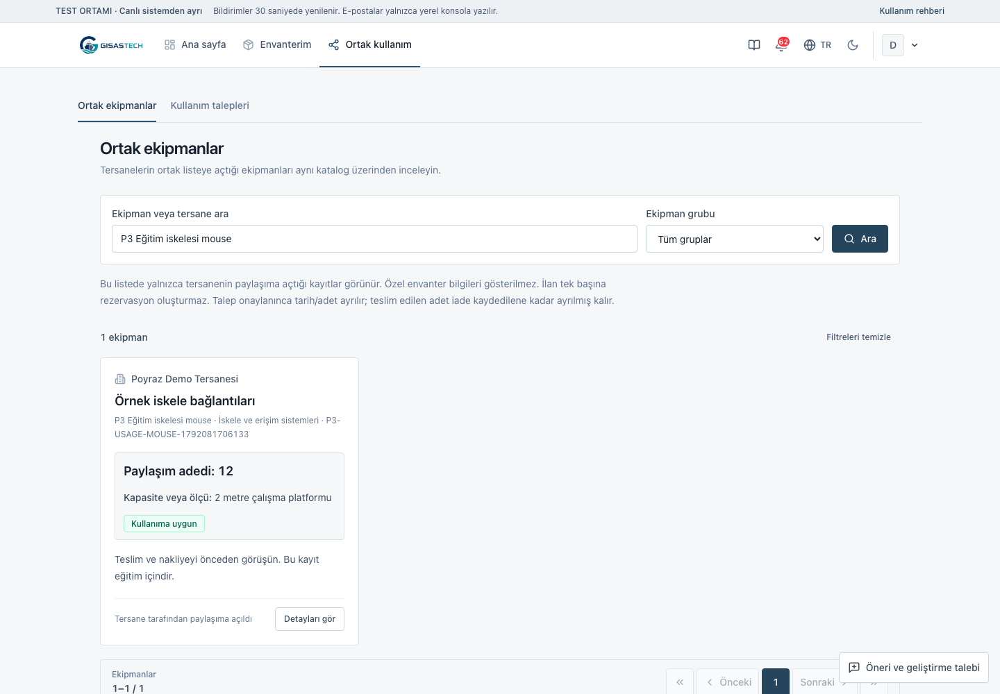

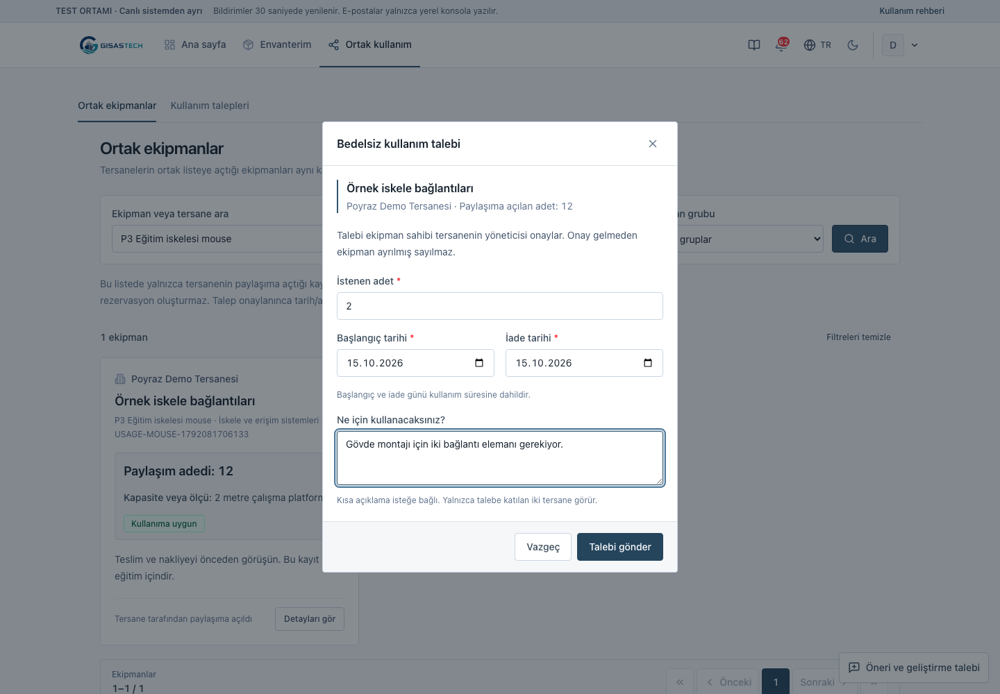

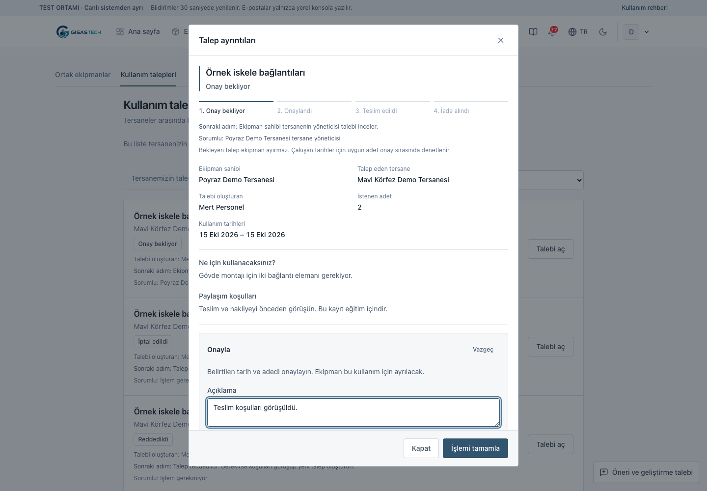

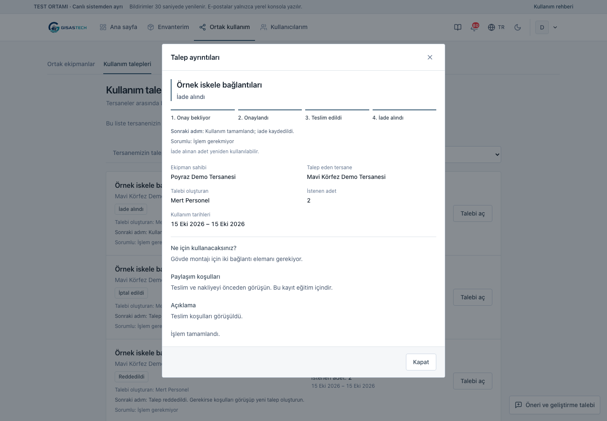
Talebi iptal edebilir miyim?
Talebi gönderen kişi veya kendi tersane yöneticisi teslim öncesinde iptal edebilir. Sahibi yönetici de onaylanmış talebi iptal edebilir. Reddedildi ve İptal edildi talepleri kapatır. Teslim edilen talep iptal edilmez; ekipman geldiğinde İade al kullanılır.
Taşıma, operatör, muayene ve saha uygunluğunu ayrıca teyit edin. Uygulama belge geçerliliğini veya mühendislik uygunluğunu kendiliğinden doğrulamaz.
İhtiyacı anlatın, yanıtı takip edin
Kim kullanır? Giriş yapmış kullanıcı. Talebiniz yalnız size ve platform yöneticilerine görünür.
- Hesap menüsünden Çözüm önerileri ve geliştirme talepleri açın.
Sağ alttaki Yeni talep düğmesi de aynı formu açar.
- Talep türünü seçip konuyu ve ihtiyacı yazın.
Çözüm önermek zorunlu değildir. İsterseniz Çözüm ve fayda ekle (isteğe bağlı) bölümünü açın.
- Talebi gönder → Talebi takip et seçin.
Taleplerim listesinden yanıt ve geçmişi görün; Yanıtınız → Yanıtı gönder ile bilgi ekleyin. Ekler en fazla 5 dosya, dosya başına 5 MB ve toplam 15 MB olabilir.
Platform yöneticisi Gelen tüm talepler içinde değerlendirme, öncelik ve sorumlu seçer. Aynı tersanedeki diğer kullanıcılar sizin talebinizi ve eklerini okuyamaz.
Dosyanın kapsamını indirmeden önce seçin
Kim kullanır? Kendi envanterine erişen tersane hesapları; birleşik envanter için yetkili platform hesabı.
- Envanterde Diğer İşlemler menüsünü açın.
Görünen sonuçlar (CSV) veya Seçilen türün tamamı (Excel) seçin. Envanteri dışa aktar penceresinde kapsamı kontrol edin.
- Görünen sonuçlar (CSV) için kayıt sayısını kontrol edip CSV indir seçin.
Geçerli arama ve filtrelere uyan bütün sayfalardaki kayıtlar dahildir.
- Seçilen türün tamamı (Excel) için ekipman türünü seçip Excel indir kullanın.
Erişebildiğiniz o türün bütün kayıtları dahildir. Arama, kategori, model ve güncelleme filtreleri uygulanmaz. Platform hesabında hedef tersane kapsamını da kontrol edin.
Tersane hesabı yalnız kendi kurumunda erişebildiği kayıtları dışa aktarır. Boş şablon kayıt çıktısı değildir; Excel’den aktar → Şablon gerekiyor mu? bölümündedir. Formül gibi başlayan kullanıcı metinleri çıktıda metin olarak korunur.

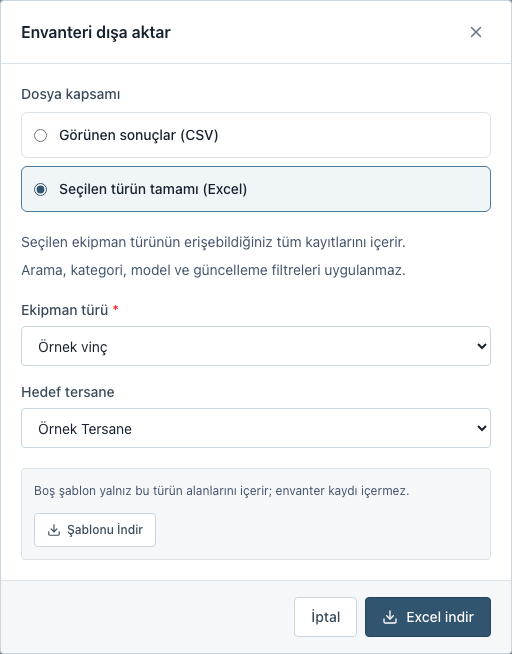
Erişim etkisini görüp tek işlemde kaydedin
Kim kullanır? Tersaneye bağlı olmayan aktif yetkili genel yönetim hesabı. Yalnız rol etiketi bu erişimi vermez.
Başlangıç: Yönetim → Kullanıcılar
- Yeni Kullanıcı Oluştur açıp kimlik bilgilerini ve parolayı girin.
- Tersane alanında bir tersane veya Şimdilik atamasız seçin.
Atamasız hesap bir tersanenin envanterine erişemez. Pasif tersane seçilirse tersane etkinleştirilene kadar envanter erişimi olmaz.
- Tersane seçtiyseniz rolünü belirleyin.
Tersane yöneticisi o kurumun kullanıcılarını ve kullanım taleplerini yönetir. Personel kurumun envanterinde çalışır ve kullanım talebi gönderir; yönetici onayı veremez.
- Kullanıcıyı gözden geçir ile bilgileri ve erişim etkisini kontrol edin.
Henüz kayıt yoktur. Parola özette gösterilmez; gerekirse Bilgilere dön seçin.
- Kullanıcıyı oluştur ve ata seçin.
Atamasız durumda düğme Kullanıcıyı oluştur olur. Oluşturma ve atama tek işlemde tamamlanır. Hata olursa bilgiler korunur.
Tersane yöneticisinin kullanıcı ekranı kendi tersanesiyle sınırlıdır; başka tersaneye atama veya platform yetkisi vermez.

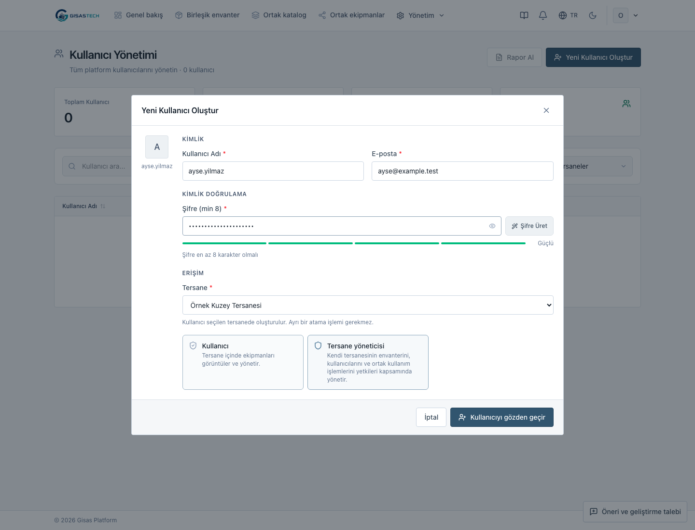

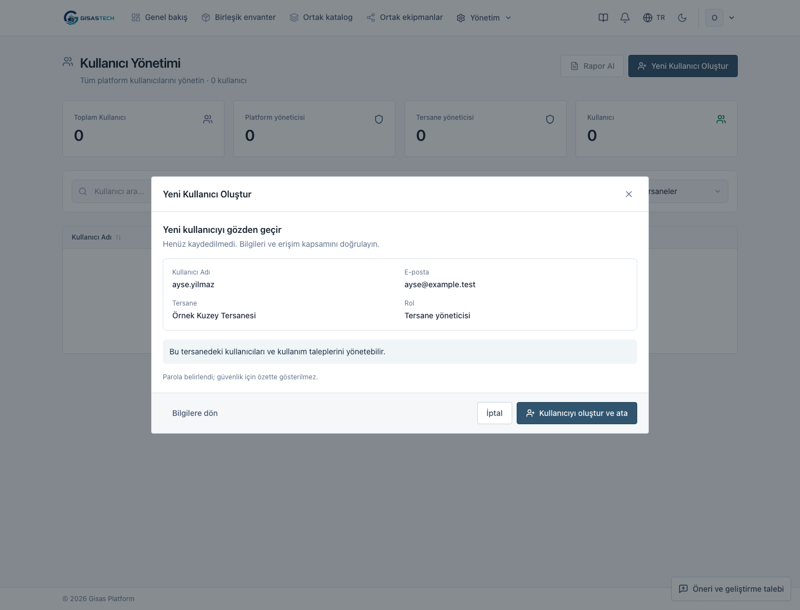
Bir adımda takılırsanız
İlgili soruyu açın. Hesabınıza uygun işlemin adımlarını yukarıdan seçebilirsiniz.
Envanterim, Ekipman türleri ve Ortak ekipmanlar neyi gösterir?
Envanterim, tersanenizin özel ekipman ve malzeme stok kayıtlarıdır. Ekipman türleri, herkesin kullandığı tanımlar ve bilgi alanlarıdır. Ortak ekipmanlar, yalnız yöneticilerin paylaşıma açtığı kayıtların sınırlı görünümüdür. Platformun Birleşik envanter ekranında kurumlara ait kayıtlar, sahipliği korunarak tek noktada incelenir.
Personel ekipman ekleyebilir mi? Paylaşıma açabilir mi?
Aktif tersaneye bağlı personel kendi kurumunun ekipmanını ekleyebilir, düzenleyebilir, silebilir ve Excel'den aktarabilir. Paylaşıma açma ve yayını geri çekme tersane yöneticisi veya yetkili platform hesabının işlemidir. Personel ortak listeyi inceleyebilir. Tersane hesabı başka kurumun özel envanterini göremez.
Adetli stok dosyasını nasıl aktarırım?
Türün takip biçimi Adetli malzeme stoku olmalıdır. Kod, görünen ad ve toplam stok için hangi alanların kullanılacağını platform yöneticisi seçer. Stok alanları önerilir; isteğe bağlı başlar ve değiştirilebilir.
Mevcut export dosyasını Excel’den aktar ile seçin; başlık ilk satırdaysa Başlık satırı: 1 kullanın. Önerilen eşleştirmeleri kontrol edin: Seri Numarası kod alanına, İsim görünen ad alanına, Adet toplam stok alanına bağlanabilir. Aynı tersane ve türde eşleşen kodun adedi güncellenir; eski adede eklenmez.
Bir stok satırı parça sayısı kadar ayrı ekipmana dönüşmez. Bilinmeyen adet sıfır sayılmaz. Dosyadaki tersane adı sahiplik atamaz; hedef tersaneyi ayrıca kontrol edin.
Excel tekrar aktarılırsa yeni kayıt mı oluşur, mevcut kayıt mı güncellenir?
Üç sayfalı aktarımda her envanter satırının yerel envanter kodu veya türün seçilmiş eşleştirme alanı gerekir. Eşleşme aynı tersane + aynı tür + aynı kod içinde yapılır. Başka tersanenin aynı kodlu kaydıyla birleşmez. Kod eşleşirse güncellenir; eşleşmezse yeni kayıt oluşur.
Tek tür aktarımında seçilmiş eşleştirme alanı yoksa başarılı satırlar yeni kayıt oluşturabilir. Başarılı dosyayı kontrol etmeden yeniden göndermeyin. Bu yol satır bazındadır; hatalı satırlar varken geçerli satırlar kaydedilmiş olabilir. Üç sayfalı aktarım bütün dosyayı birlikte uygular.
Tek tür dış Excel güncellemesinde boş hücre mevcut değeri korur. 0 ve hayır/false geçerli değerlerdir. Tarihleri 2026-10-14 biçiminde, seçenekleri tanımlı değerlerden girin. Her iki aktarımda da yeni stok adedi eski adede eklenmez.
Kendi Excel dosyamdaki sütunlar farklı adlandırılmışsa ne yaparım?
Otomatik önerileri kontrol edin; belirsiz ekipman türünü veya sütun eşleşmesini seçin. Zorunlu alanlar ve benzersiz anahtar eşlenmiş olmalı; aynı alanı iki sütuna bağlamayın. Yanlış sayfa veya başlık önerildiyse Dosya düzeni bölümünü açın. Değişiklikten sonra Dosyayı yeniden kontrol et kullanın. Toplam/ara toplam ve tekrarlanan başlıklar gerekçeleriyle atlanır; formül, eksik değer veya yinelenen kodlar kontrol bekler. Dosyanın tamamı analiz edilir; ekranda örnek satırlar gösterilir.
Ekipman neden ortak listede görünmüyor?
Paylaşımı yönet seçeneğini, sahibi tersanenin aktif olduğunu ve zorunlu bilgilerin tamamlandığını kontrol edin. K kategorisi, C ön sınıfı veya kapsam dışı nedeni bulunan türler yayınlanamaz. Tür sonradan kapsam dışına alınırsa yayın listeden gizlenir.
Stok paylaşım adedinin altına düşerse veya tür değişirse yayın durur; bilgiler taslak olarak korunur. Stok artışı otomatik yeniden yayınlamaz; bilgileri düzeltip yeniden açın. Açık kullanım talebi varken sahibi/türü değiştirmek veya kaydı silmek engellenir. Onaylanan ya da teslim edilen adedin altına stok veya paylaşım adedi düşürülemez.
A/B/C, tür düzeyindeki ön değerlendirmedir: A uygun aday, B koşulları doğrulanması gereken aday, C kapsam dışıdır. A veya B, müsaitlik ya da muayene onayı değildir. Bedelsiz kullanım için talep, onay, teslim ve iade adımlarını izleyin.
Toplam stok ile paylaşım adedi neden ayrı?
Kurmaca örnekte tersanenizde 500 platform parçası bulunabilir; diğer tersanelere yalnız 100 adet sunabilirsiniz. Paylaşım adedini ayrıca yazın. Stok türünde toplamdan büyük adet, tek tek izlenen ekipman kaydında 1 dışında adet kabul edilmez. Uygun olarak işaretlenen yayında adet gerekir; adet boşsa sahibiyle görüşülür. İç stok bilgisi ortak listeye açılmaz.
İletişime geçince otomatik mesaj veya rezervasyon oluşur mu?
Hayır. Ayrıntı ekranındaki e-posta veya telefon bağlantısı seçtiğiniz uygulamayı açar; mesajı veya aramayı siz başlatırsınız. Yalnız yayın için açıkça girilen iletişim bilgileri gösterilir. İletişim girilmemişse başka özel kayıttan adres veya telefon çıkarılmaz.
Katalog Excel dosyasını hazırlarken nelere dikkat ederim?
.xlsx dosyası kullanın; sınır 5 MB ve 2.000 kayıttır. Ekipman türleri, Alanlar ve Envanter sayfalarında katalog kodlarını tutarlı yazın. İlk satır başlık, ikinci satırdan sonrası veridir. Rehber sayfası aktarılmaz.
Katalog kodu ortak türü; yerel envanter kodu seçilen tersanenin kaydını tanıtır. Alan kodlarını sonraki güncellemelerde koruyun. Seçenekleri İyi|Bakımda|Kullanım dışı gibi | ile ayırın. Yeni alanda Zorunlu boşsa alan isteğe bağlıdır. Formül ve hata hücrelerini düzeltin; eski ve yeni değerleri önizlemede karşılaştırın.
Benzer tür adları otomatik birleştirilmez. Dosya, seçimler veya ilgili kayıt değişirse yeniden inceleyin. Üç sayfalı aktarımda bir hata varsa hiçbir kayıt değişmez.
“Güncelleme gerekli” bildirimi geldi
Bildirimden eksik kayıtlara gidin veya envanterde Eksik bilgili kayıtları göster seçin. Kaydı açıp işaretlenen zorunlu bilgileri tamamlayın. Aynı ekipmanı yeniden oluşturmayın. Eksikler giderilene kadar yeni paylaşım, kullanım onayı ve teslim engellenir; mevcut teslimin iadesi kaydedilebilir.
Bedelsiz kullanım talebi düğmesi neden yok?
Kendi tersanenizin ekipmanı, paylaşım adedi belirtilmemiş kayıt veya kullanıma kapalı ilan için talep gönderilemez. Stok adedi bilinmiyorsa sahibi önce tamamlamalıdır. Ortak kullanım ortamda açılmadıysa sistem yöneticisi yapılandırmayı kontrol eder.
İki faktörlü giriş zorunlu mu?
Herkes için isteğe bağlıdır. Hesap menüsündeki İki Faktörlü Doğrulama bölümünden kurabilirsiniz. Kurduktan sonra girişte ikinci doğrulama istenir; kurtarma kodlarınızı saklayın.
Liste boş, kayıt görünmüyor veya işlem düğmesi kapalı
Arama ve filtreleri temizleyin; doğru hesap ve aktif tersaneyle giriş yaptığınızı kontrol edin. Aktarımda dosyayı, türü, hedef tersaneyi ve zorunlu sütun eşlemelerini kontrol edin. Bağlantı kesildiyse aynı dosyayı tekrar göndermeden mevcut kayıtları ve aktarım sonucunu inceleyin. Eksik ortak tür için platform yöneticisine başvurun.
Tür silinemiyor veya bilgi alanları değişmeli
Bağlı envanteri olan tür silinemez; takip biçimi de değiştirilemez. Mevcut alanı düzenleyin: görünen ad değişse de kalıcı kod ve eski değerler korunur. Yeni alanlar isteğe bağlıdır. Alanı zorunlu yaparken etkilenecek kayıtları kontrol edin; eksik kayıtların tersane yöneticilerine toplu bildirim gider.
Alanı kaldırmak eski değeri otomatik başka alana dönüştürmez. Kategori K veya ön sınıf C gibi kapsam dışı bilgilerini yalnız yayın açabilmek için değiştirmeyin.
Demo ile deneyin
Bu rehberdeki ekranlar kurmaca tersaneler ve ekipmanlarla hazırlanmıştır. Demo çalışıyorsa uygulamayı açın. Adres yalnız demo çalıştırılan bilgisayarda açılır.
Deneme hesapları
| Hesap | Deneyebileceğiniz görev |
|---|---|
yonetici@demo.gisas.test | Envanter, Excel, paylaşım ve gelen kullanım taleplerini onaylama |
personel@demo.gisas.test | Kendi envanteri ve bedelsiz kullanım talebi; yayın/onay ayarı yok |
diger@demo.gisas.test | Kendi envanteri, ortak liste ve gönderdiği kullanım talepleri |
admin@demo.gisas.test | Dinamik türler, üç sayfalı Excel ve birleşik envanter; kullanım onayı yok |
İlk kurulum parolası: GisasDemo!2026. Kurulumda değiştirilmişse size verilen demo parolasını kullanın. Hesaplar gerçek e-posta kutusu değildir.
Örnek Excel dosyaları
Bu eski örnekler tek tür envanter veya katalog verisi denemek içindir; özgün GİSBİR kataloğunun tamamı değildir. Yeni üç sayfalı dosya için Excel’den aktar → Şablon gerekiyor mu? → Birleşik şablonu indir kullanın. Geçerli ve hatalı örnekleri ayrı deneyin.
Demo kurulumu ve çalıştırma bilgileri, ortamı hazırlayan kişi için Test ortamı notlarında. Güncel adımların yazılı başvurusu: Hızlı başvuru.